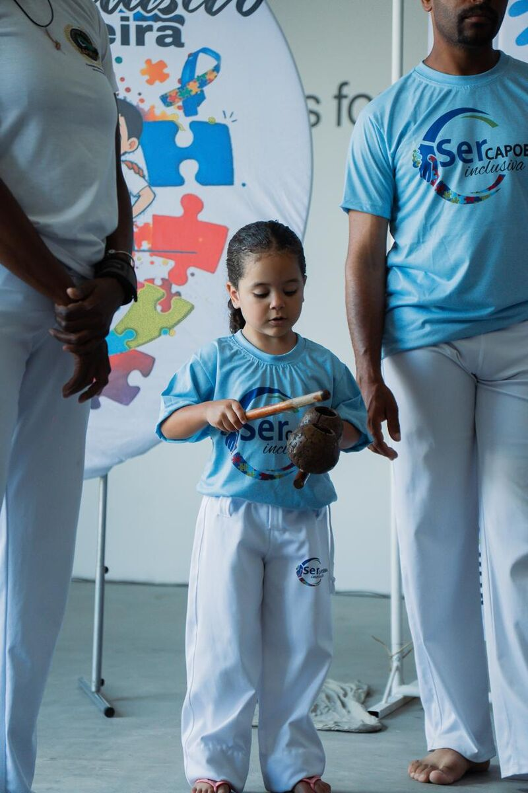
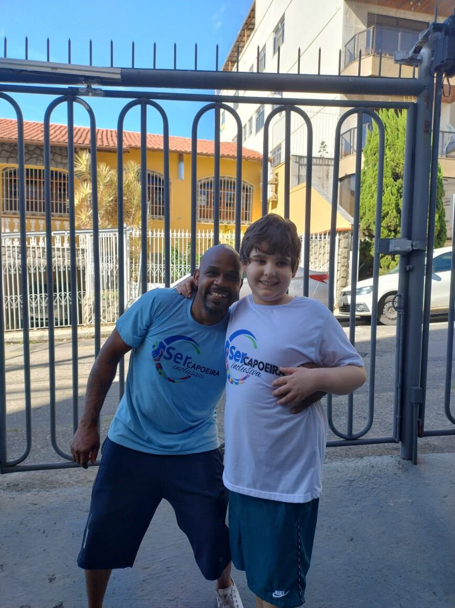
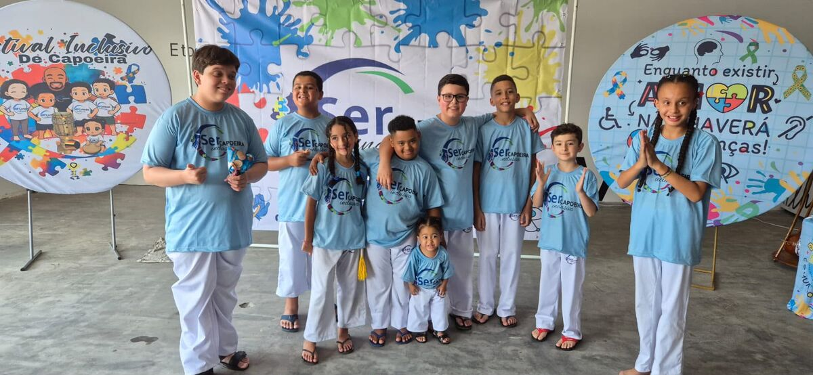
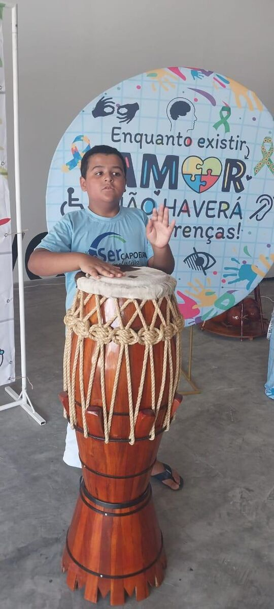
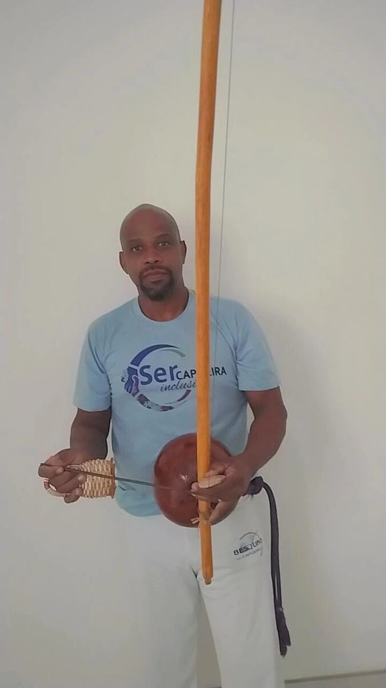

Capoeira inclusiva adaptada
Vai muito além da ginga.
A Capoeira Inclusiva Adaptada é uma oportunidade para que cada pessoa seja acolhida, respeitada e estimulada dentro das suas próprias possibilidades.

(01) O que é
Inclusão, empatia e acolhimento.
A Capoeira Inclusiva Adaptada promove inclusão, empatia e acolhimento.
É fazer inclusão e proporcionar valorização, utilizando essa arte como canal de estimulação, expressão e sensibilização.

O método da Capoeira Inclusiva é ter um olhar atento às possibilidades de cada pessoa, favorecer sua autonomia e estimular sua participação na capoeira, respeitando suas características e explorando suas potencialidades.
(02) Metodologia
Os nove pilares
Princípios que orientam as aulas, as rodas e os encontros.
Receber
Acolhimento
Cada pessoa é recebida com atenção e cuidado.
Respeito às individualidades
A aula respeita as características, o ritmo e os limites de cada um.
Adaptação dos movimentos
Os movimentos da capoeira são ajustados às possibilidades de cada participante.
Envolver
Participação
Todos participam da roda, cada um à sua maneira.
Autonomia
O trabalho favorece a autonomia de cada participante.
Estímulo à convivência
Aulas e rodas aproximam pessoas típicas e atípicas, famílias e comunidade.
Expressar
Expressão corporal
O movimento é usado como forma de expressão.
Música e cultura
Os instrumentos, os cantos e a história da capoeira fazem parte das aulas.
Inclusão social
A capoeira como meio de integração de pessoas típicas e atípicas.
(03) Para quem é
Público atendido
O projeto atende:
- Crianças
- Adolescentes
- Adultos
- Pessoas autistas
- Pessoas com TDAH
- Pessoas com síndrome de Down
- Pessoas com deficiência
- Pessoas neurotípicas
- Famílias e comunidade
A capoeira inclusiva é uma atividade de convivência, expressão corporal, cultura e desenvolvimento motor. Ela não substitui acompanhamento médico ou terapêutico.

(04) Música e cultura
Música e cultura
A capoeira reúne luta, dança, música e tradição brasileira. Tocar e cantar também fazem parte da roda.
Nas aulas, os participantes têm contato com instrumentos como o berimbau e o atabaque.


Faça parte
Quer saber como participar?
Fale com o Professor Dinho para conhecer as atividades e tirar suas dúvidas.